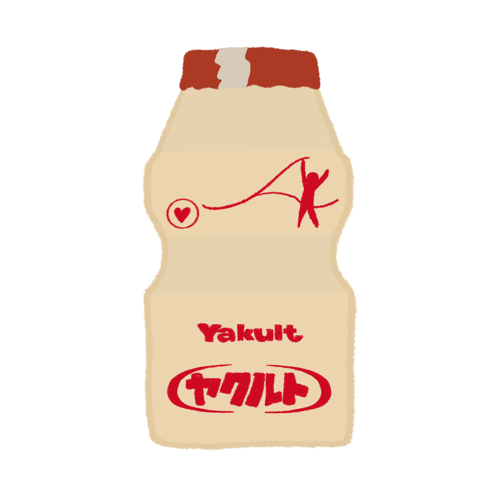
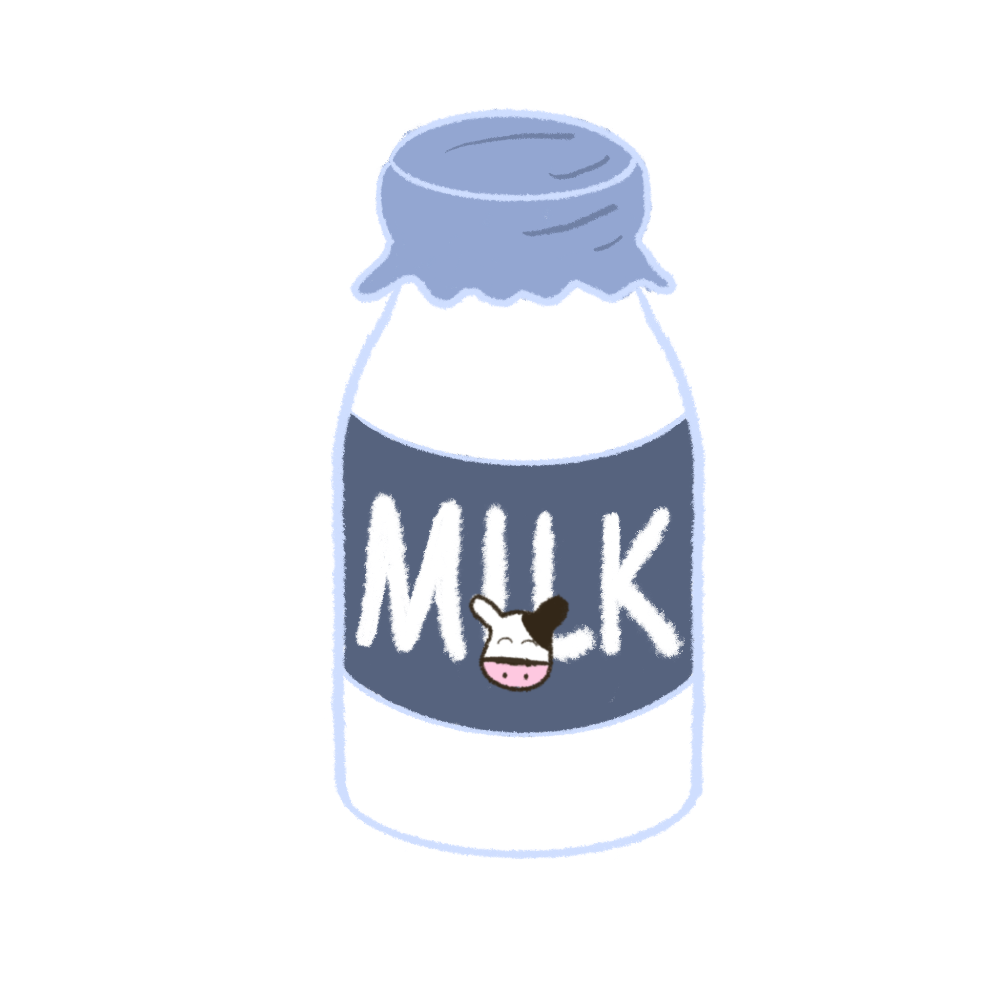
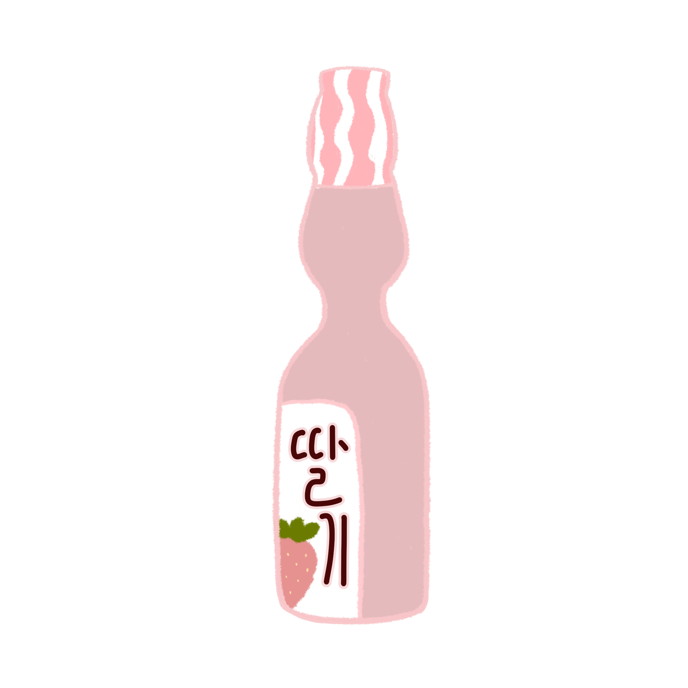
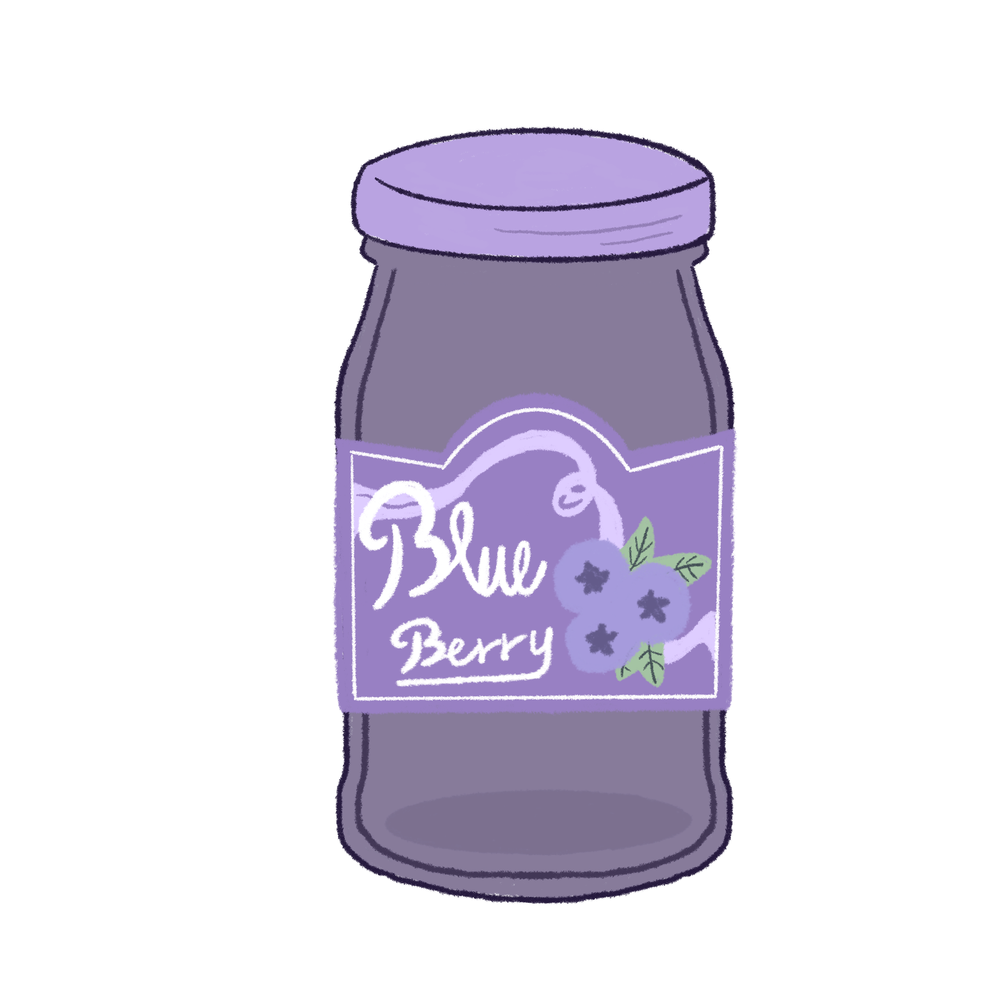
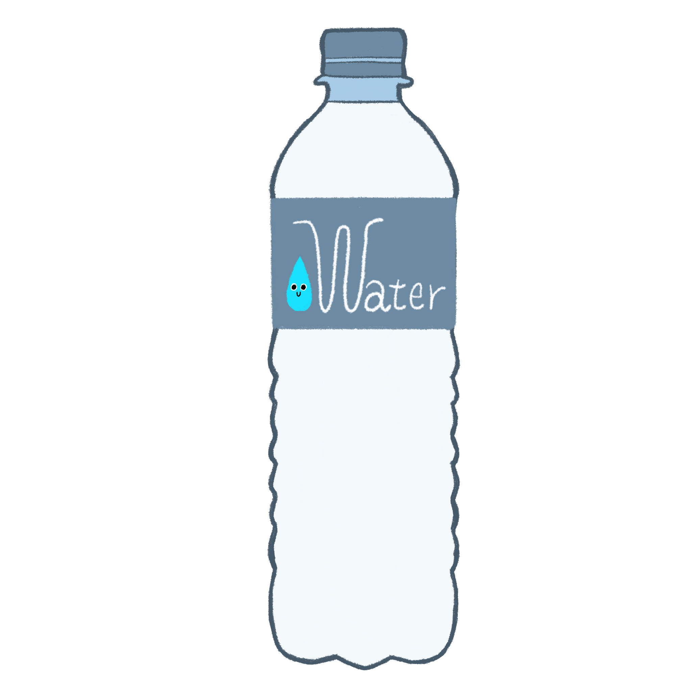
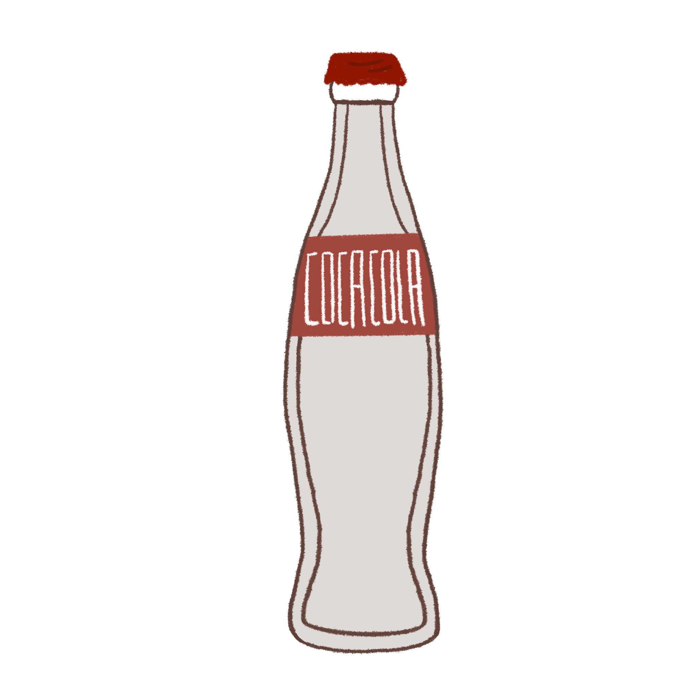
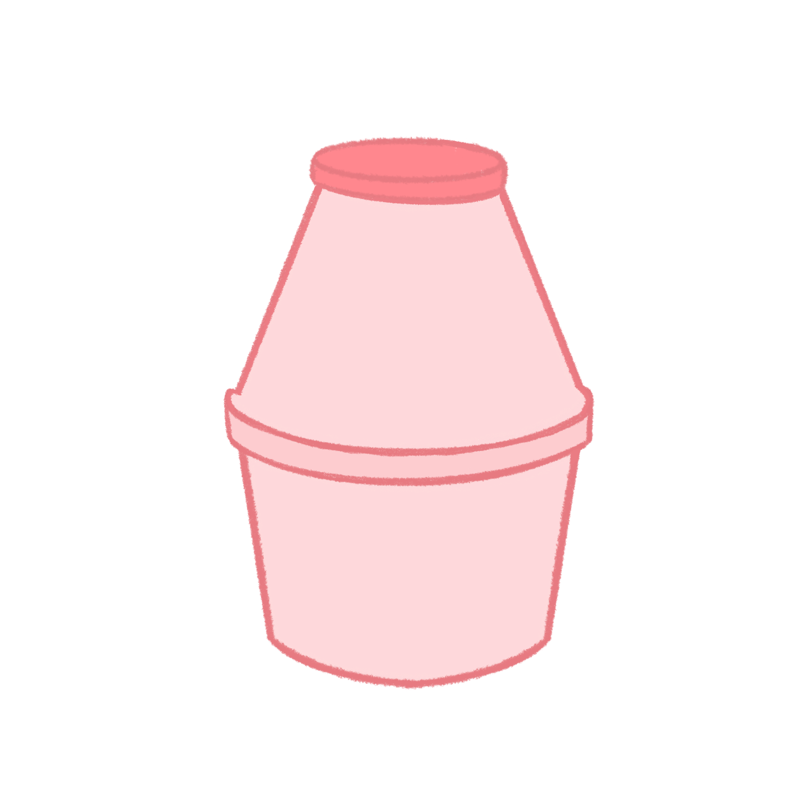
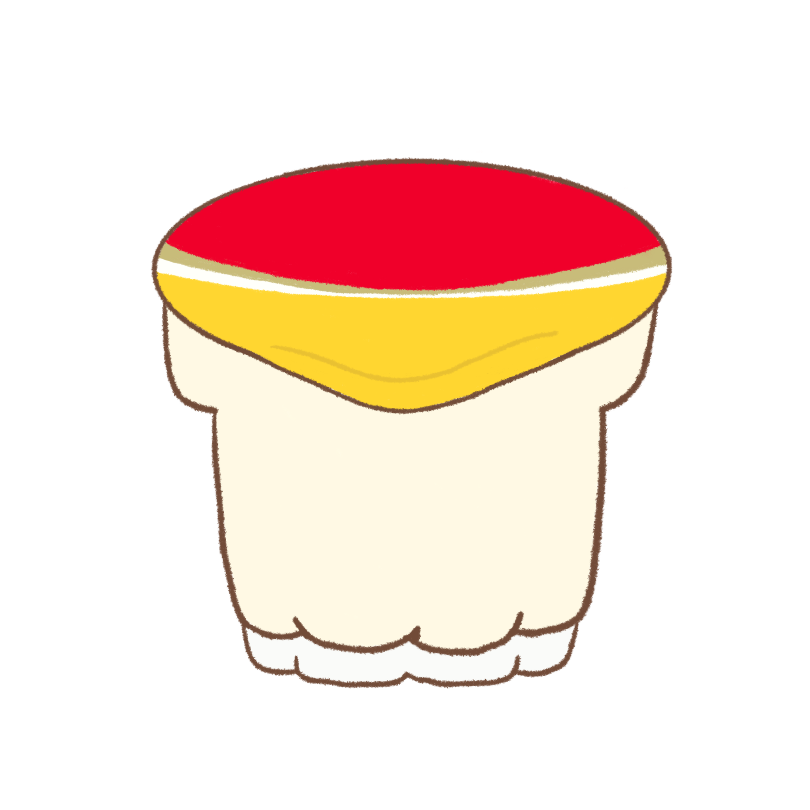
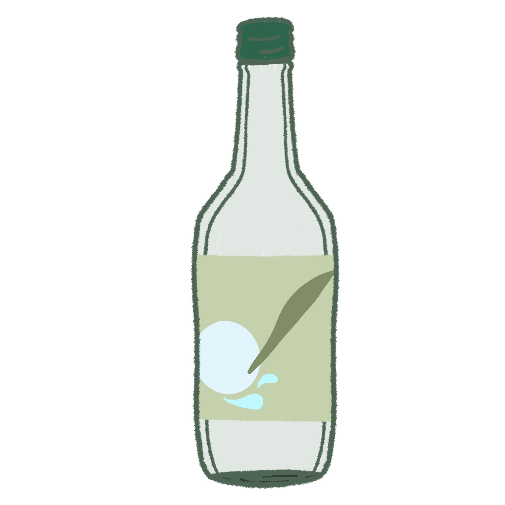

溫和療癒的陪伴
以簡潔、寧靜且低干擾的介面，規劃澆水、撫摸與環境調節等互動，讓使用者能依當下狀態進入片刻靜心。
讓每一次微小的關懷，都成為生命成長的養分。蘚・微境是一款結合苔蘚角色養成與心靈陪伴的療癒型行動 App，在快節奏的生活裡，把「靜心」轉化成可被看見、照顧與陪伴的過程，邀請使用者慢慢照顧一座專屬的微觀世界。
蘚・微境是一款結合苔蘚角色養成與心靈陪伴的療癒型行動 App。使用者能在日常裡照顧苔蘚角色與生態瓶，讓「靜心」從抽象感受，成為可以被看見、照顧與陪伴的過程。
專題以「蘚」象徵微小而堅韌的生命力，以「微境」描繪瓶中的微觀世界與使用者親手開闢的心靈之境。透過細緻的角色與生態互動，重新看見日常容易忽略的小小生命。
結合苔蘚角色養成、專屬生態瓶與修復任務，讓日常照顧成為看得見的成長。使用者可以依自己的節奏探索、收集與佈置，逐步修復失去生機的生態瓶。
以簡潔、寧靜且低干擾的介面，規劃澆水、撫摸與環境調節等互動，讓使用者能依當下狀態進入片刻靜心。
照護與互動可累積養成資源，逐步解鎖更多苔蘚品種與裝飾，讓投入的心力轉化為看得見的成長。
透過容器、苔蘚與裝飾的選擇，組合出個人化生態瓶，並將培育成果收藏為陪伴歷程的紀錄。
遊戲流程從照顧苔蘚開始，透過觸發修復任務與角色互動，讓瓶中環境逐步恢復生機；完成後可收集新的容器與裝飾，打造個人專屬的微觀世界。
進入 App，選擇當下想進行的簡單照護互動。
照護轉化為苔蘚角色與生態瓶的成長回饋。
使用養成資源，解鎖苔蘚、容器或個性化裝飾。
將完成的生態瓶收進收藏，留下每一段陪伴紀錄。
以自然生態、角色互動和探索式收藏作為三個特色方向，讓產品不只是計時器或靜態風景，而是能逐步建立情感連結的數位陪伴體驗。
以苔蘚默默努力、堅韌生長的個性，設計溫柔的關心與暖心句子，為使用者提供沒有壓力的情緒陪伴。
九款透明容器承載不同苔蘚故事與生活場景。瓶中安排互利共生或片利共生的生物，使用者透過觸發修復任務，逐步陪伴並修復失去生機的生態瓶。
規劃九款有生活感的透明容器，搭配苔蘚品種與裝飾自由組合，讓每個人的微觀世界都能呈現不同樣貌。
認識住在微境裡的九位苔蘚夥伴。點一下角色，就能聽聽他們今天想說的話。
角落裡也藏著苔蘚夥伴，點擊他們會收到一則隨機苔語錄。

養樂多瓶01 / YAKULT
牛奶瓶02 / MILK
彈珠汽水瓶03 / RAMUNE
藍莓果醬瓶04 / JAM
礦泉水瓶05 / WATER
可樂瓶06 / COLA
草莓牛奶瓶07 / STRAWBERRY
布丁杯08 / PUDDING
燒酒瓶09 / BOTTLE每款容器都有自己的微型生態與探索故事。以下是養樂多瓶與牛奶瓶的場景地圖，呈現苔蘚居民、環境配置和可探索的區域。


設計方向以自然意象與心理需求為基礎，思考使用者如何在虛擬環境中感受到自主、成長與連結。這些理論是本專題的設計依據與預期方向，不代表療癒成效已經完成實證。
以苔蘚、生態瓶和緩慢生長的視覺變化，將自然元素帶入數位空間，回應人們親近自然、恢復心理能量的需求。
在團隊專題中，我負責遊戲企劃、視覺設計與故事設定，將苔蘚角色、生態瓶場景與修復任務整合為完整的遊戲體驗。
國立臺中教育大學｜數位內容科技學系
專題製作企劃
專案資訊整理自畢業專題介紹。九款容器插畫與養樂多瓶、牛奶瓶地圖採用專題原始美術；首頁瓶景插畫為網頁概念示意。主要工具：Adobe Illustrator、Unity。